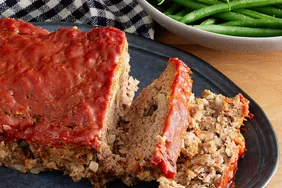

Meatloaf

Description
Get back to basics with this easy meatloaf recipe. It's quick,
traditional, delicious, and it's sure to please everyone at your table.
Ingredients
- ground beef
- egg
- onion
- milk
- bread crumbs
- salt and pepper
- ketchup
- brown sugar
- mustard
Steps
- Mix the loaf ingredients, then transfer to a loaf pan.
- Mix the sauce ingredients, then pour over the loaf.
- Bake in the preheated oven until the meatloaf is no longer pink in the center.